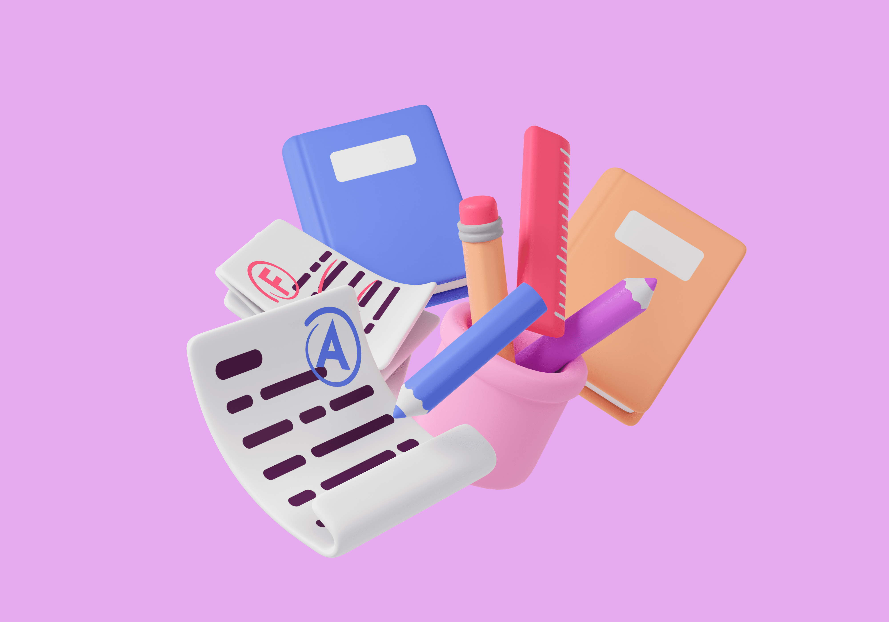

Research
I put out a survey to find out how teachers used educational platforms to help identify which areas were priorities. Here are some of the key questions I considered when gathering data for this project:
- How often do you use digital educational platforms in your teaching?
- What types of digital educational platforms have you used?
- What features are most important to you?
- What challenges have you encountered while using digital educational platforms?

Most use digital platforms to assign and grade homework, conduct assessments, and provide additional resources to students.
Teachers use a mixture of learning management systems, educational apps, and video conferencing tools.
Self-marking ability and assigning or tracking homework are the most important.

Technical difficulties and student engagement issues are the most common issues.